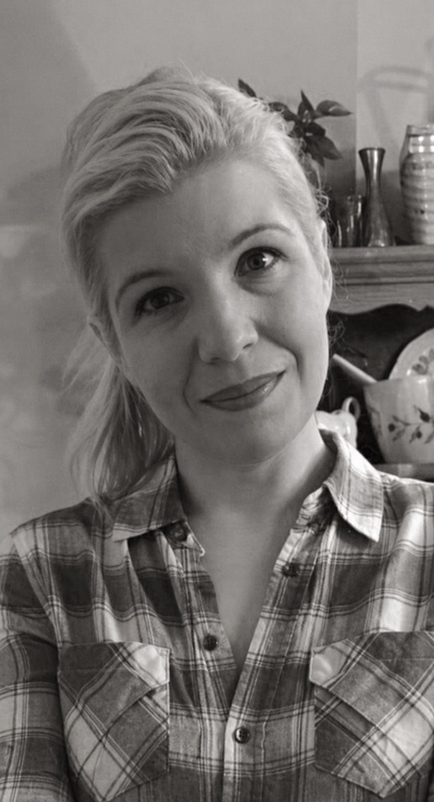

Reflective Sessions
Private conversations for lifestyle reflection, emotional clarity, and returning to yourself.

Irina Kot
A reflective lifestyle practice for women returning to themselves — gently, honestly, and without performance.
Begin with a first conversationI offer a quiet, structured space for reflection, personal guidance, and inner reorientation.
The work is not about slogans or self-improvement pressure. It is about seeing what is happening, what has become unbearable, and what kind of step would return dignity to your position.
Private conversations for lifestyle reflection, emotional clarity, and returning to yourself.
Focused support during transitions when old structures no longer hold.
Written reflection for moments when language needs quiet form and depth.
This work is not psychotherapy, diagnosis, or crisis care. It is a reflective lifestyle practice focused on clarity, choice, responsibility, and meaningful personal direction.
If you feel that this space speaks to you, you are welcome to send a short note.
Send a note